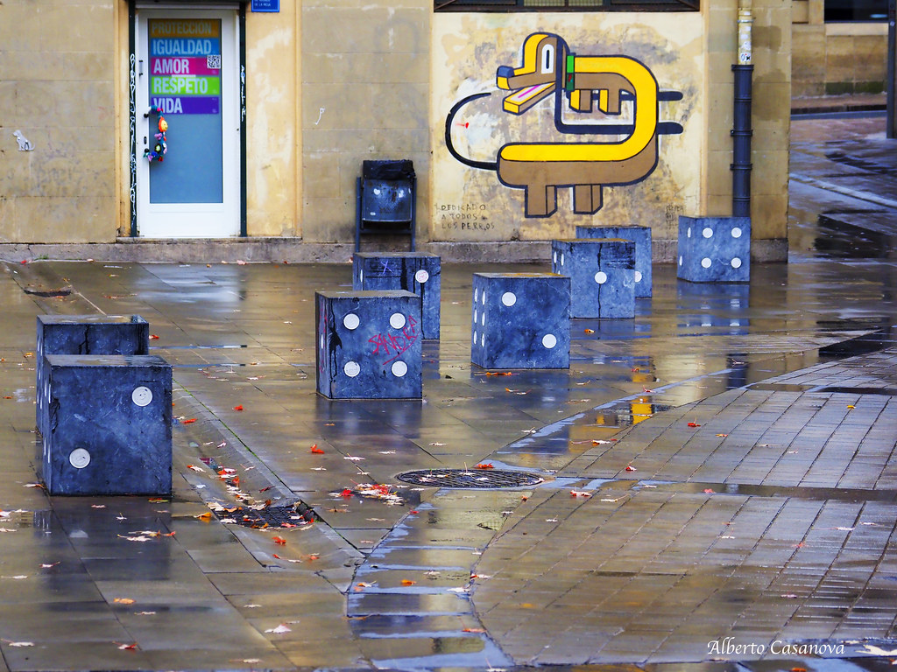

ELS NOSTRES APUNTS
En aquesta web podeu consultar tot el material que utilitzarem per a desenvolupar la unitat 1 , que aquest curs es correspon amb la unitat d'atzar i probabilitat del temari de segon de batxillerat de les matemàtiques aplicades a les ciències socials.
Índex de la unitat
- Tipus de successos.Successos Probabilístics.
- Àlgebra de Boole
- Espai probabilístic.
- Càlcul de la probabilitat.Definicions de probabilitat.
- Probabilitat condicionada.Successos independents. Regla del producte.
- Teoremes. Regla de la suma.
Curiositats
Altres webs d'interés
Llibres de consulta
Pel·lícules i documentals relacionats amb la probabilitat
Web del projecte
Altres recursos didàctics
Llicència
